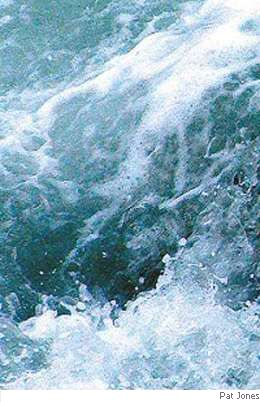

Tony Barnstone
Thing
There was nonbeing before being. Before
nonbeing, there was no firmament, no air.
So what thing breathed? And where? From what strange core
came all this water stretching everywhere?
So dark that darkness hid inside the dark,
nothing to show the deep, everywhere sea,
no death, no immortality, no spark
of birth, and yet the thing breathed windlessly.
Maybe it’s in us at the nucleus
and all our thoughts are molecules awhirl
about unknowing force. Maybe for men
this being is God. Or maybe not. The world
prays to this nullity, Amen, Amen
(as if a thing like that would care for us).

Tony Barnstone teaches at Whittier College and is the author of 11 books. His recent books of poems are Sad Jazz: Sonnets (Sheep Meadow Press, 2005) and The Golem of Los Angeles (winner, Benjamin Saltman Award in Poetry, Red Hen Press, 2008). His new book, Tongue of War, won the John Ciardi Prize in Poetry and will be published by BKMK Press in 2009. He has won fellowships and poetry awards from the National Endowment for the Arts, the California Arts Council, the Pushcart Prize, and elsewhere, and won the grand prize in the Strokestown International Poetry Festival, in Strokestown, Ireland, in 2008. His website is http://web.whittier.edu/barnstone/TONY.htm.
|